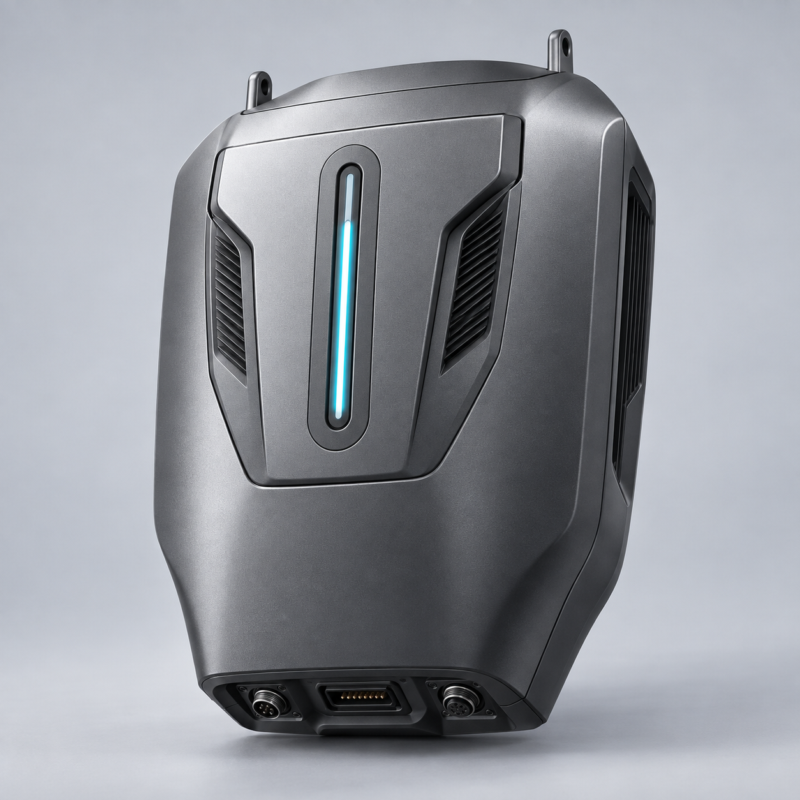

工业设计 · 概念效果图01 / 03

CONNECTION ARCHITECTURE把连接，集中在一起。
拟定接口方案 · 数量与电气规格待确认
宇树 G1 首发适配目标
ROBOTDOCK 供电管理 / 通信接入 / 设备驱动
CANRS-485EthernetUSB
夹爪灵巧手传感器
源自背部一体化安装构想GRAPHITE / 石墨灰
概念图，非实物照片
DESIGNED TO CONNECT01 / 产品详情
一个小背包，
连接更多可能。
把供电、通信和设备驱动集中到背包里。搭配对应线束与手腕安装件，让机器人更方便地接入夹爪和灵巧手。
01通用能力，集成在背包内
规划集成供电管理、通信接口和驱动软件，减少重复接线与开发。
专用适配，随套装交付
根据末端设备，配齐线束、机械安装件和对应驱动。
面向已适配设备的即插即用
先把选定组合调通，再提供统一的安装、配置和调用体验。
COMPATIBILITY02 / 兼容设备
先把一套做好，
再连接下一种。
TECHNICAL OVERVIEW03 / 接口与规格
接口清晰，拓展有据。
以下为第一代产品规划，便于讨论选型。
- 通信接口
- CAN / RS-485 / Ethernet / USB 拟定
- 供电能力
- 集中供电与保护 电压、功率及取电方式待确认
- 软件接口
- ROS 2 / DDS / Python SDK 规划支持
- 安装方式
- 背部安装 + 专用线束 + 手腕转接件
- 换装方式
- 外设独立断电换装（规划）暂停任务、安全停稳后换装并加载配置，减少整机重启G1+ 适配、分路供电控制及热插拔能力待验证
- 尺寸 / 重量
- 待结构设计与样机验证后公布
- 套装范围
- 小背包 / 小背包 + 灵巧手 / 小背包 + 夹爪 / 小背包 + 夹爪 + 双腕相机后三种套装送连接件